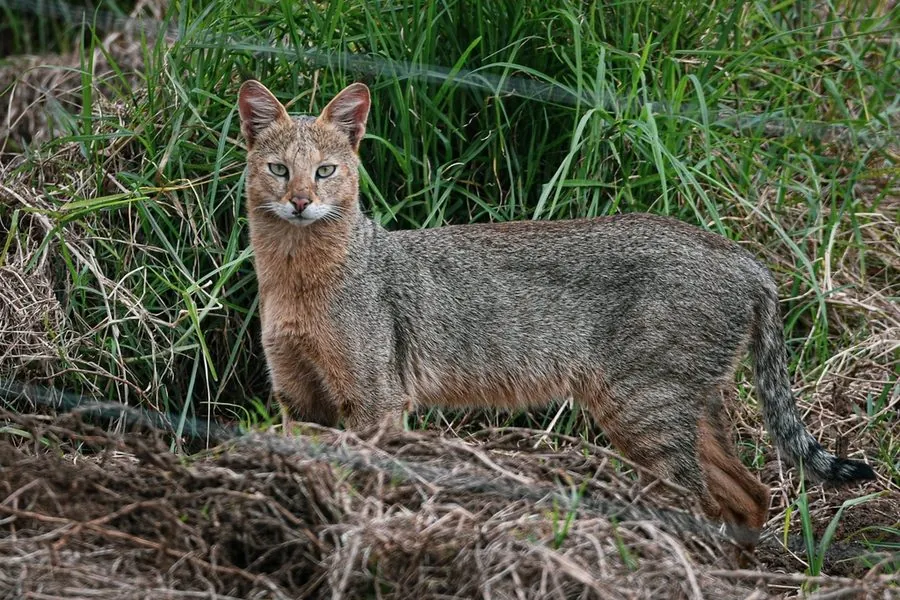

哺乳动物 · 动物界
丛林猫 Felis chaus

亚洲湿地与灌丛中的中型猫科，耳朵大、腿部相对长，善游泳，捕食鼠类、鸟类和鱼类，也常出没于农田边缘。
- 分类
- 门脊索动物门纲哺乳纲目食肉目科猫科属猫属
- 栖息环境
- 湿地、灌丛、芦苇荡与农田边缘，偏好靠近水源
- 地理分布
- 埃及、中东、南亚、东南亚及中国南方
- 保护级别
- IUCN 无危（LC）；中国国家二级保护动物
物种志
丛林猫体长 0.6–0.75 米，尾长 0.2–0.3 米，体重 4–12 kg。它的体形比家猫大而瘦长，被毛为沙黄至灰褐色，四肢和尾部有深色环纹，耳朵大而尖、耳背带黑色，面部有深色纵纹，尾巴较短。
丛林猫分布于从埃及、中东、南亚到东南亚和中国南方的湿地、灌丛、芦苇荡和农田边缘，偏好靠近水源的环境。它与多数猫科不同，善游泳，常在水边捕食鱼类、蛙类、水鸟，也捕食鼠类、野兔和爬行动物。丛林猫多在夜间和晨昏单独活动，白天躲在芦苇丛或洞穴中，领地以气味标记。雌性妊娠期约 63–68 天，每胎 3–5 仔。丛林猫适应力强、分布广，种群总体稳定，中国将其列为国家二级保护动物。
形态与习性
- 食性鱼类、蛙类、水鸟、鼠类、野兔与爬行动物
- 体长0.6–0.75 m，尾长 0.2–0.3 m
- 体重4–12 kg
- 寿命野外约 12 年
- 繁殖妊娠期约 63–68 天，每胎 3–5 仔
- 活动节律夜间和晨昏单独活动
- 本领善游泳，常在水边捕鱼
趣味知识
- 丛林猫善游泳，常在水边捕食鱼类、蛙类和水鸟。
- 它的耳朵大而尖，耳背带黑色，与家猫明显不同。
- 丛林猫喜欢芦苇荡和农田边缘，适应人类改变的环境。
- 中国将丛林猫列为国家二级保护动物。